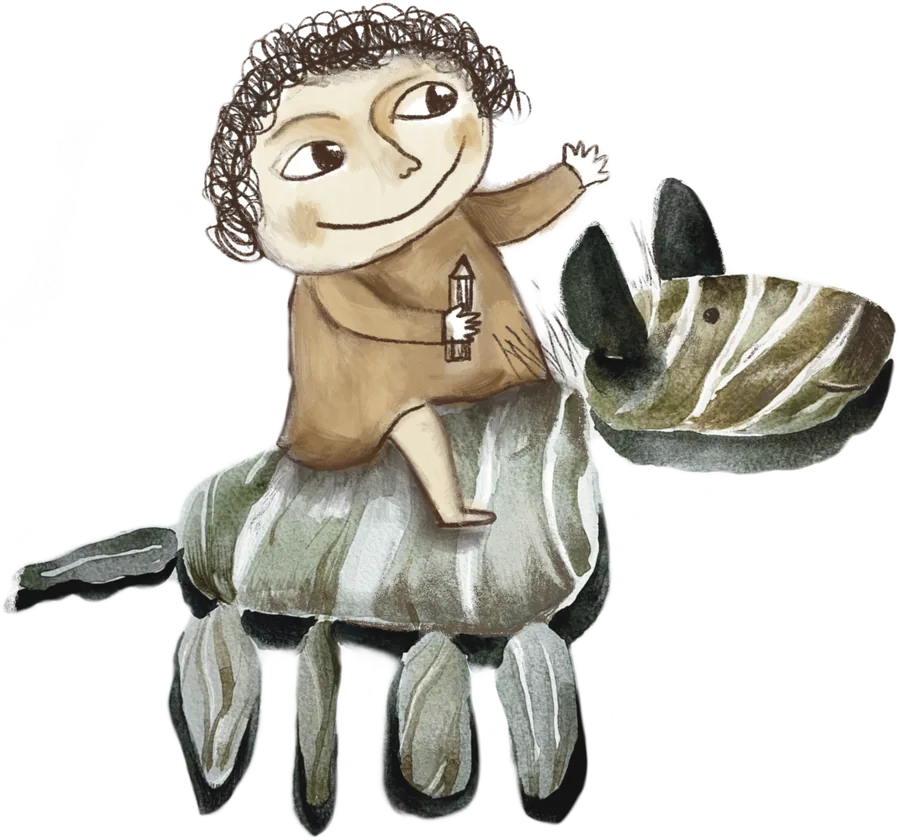
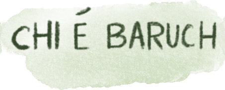
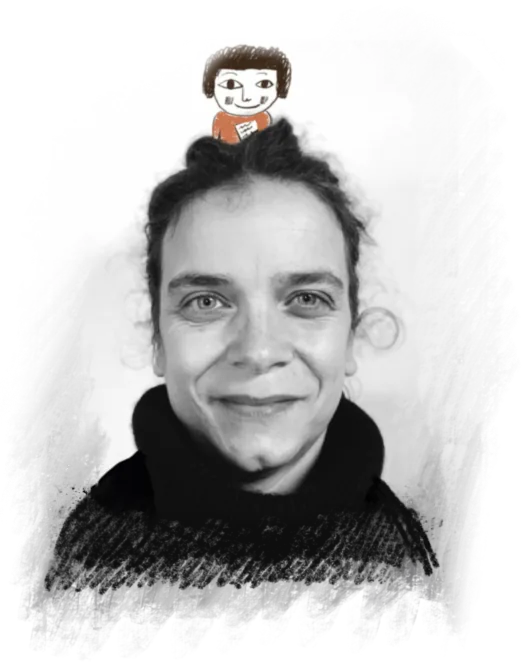

Baruch è un personaggio ma anche un progetto che racchiude in sé il desiderio di creare attraverso il disegno un mondo di natura e meraviglia. Un universo visivo pensato per ispirare la curiosità e la creatività nei bambini, con un interesse trasversale che coinvolge anche gli adulti.
L’immaginazione è una risorsa preziosa e Baruch offre l’opportunità di connettersi con sensibilità ai valori della natura, della bellezza e dell’apprendimento esperienziale.
Il progetto si articola in diverse proposte, dall’offerta di immagini originali e pattern esclusivi perfetti per decorare oggetti di uso quotidiano, alla creazione di contenuti illustrati che stimolano la fantasia e la consapevolezza del mondo che ci circonda. Propone inoltre diversi laboratori creativi per sostenere e stimolare l’osservazione e la manualità.
È un progetto aperto, un contenitore di scoperte dove il disegno incontra la materia, la natura si fa trama e le mani danno forma a storie che ancora non esistono. Ma è anche il desiderio di collaborazioni costruttive, per mescolare esperienze e competenze differenti.
Baruch nasce da un desiderio di cura e di pace, come un piccolo custode che accompagna tra il visibile e l’immaginario. È il mio modo di benedire la curiosità.
Dietro gli occhi di Baruch ci sono i miei.
Mi chiamo Caterina e sono un’illustratrice che non ha mai smesso di esplorare la materia.
Il mio percorso inizia dalla passione per il disegno, che mi ha guidata attraverso gli studi artistici alla scoperta di una verità essenziale: un’immagine non è mai solo colore su carta, ma la narrazione profonda di un pensiero o di un’esperienza. È un modo per abitare la vita.
La mia ricerca si muove tra il rigore del disegno dettagliato e la freschezza dell’improvvisazione; spazia dall’immagine naturalistica a quella fiabesca, dalla bidimensionalità della carta alla forma tattile dell’argilla. Quando non disegno, conduco laboratori dove invito gli altri a cercare la propria scintilla creativa, perché credo che questo contribuisca a farci sentire persone accese.
Il percorso
Caterina Santambrogio, illustratrice, decoratrice e atelierista. Nata nel 1972, ha conseguito il diploma presso l’Istituto d’Arte con indirizzo grafica e fotografia. Ha frequentato l’Accademia di Belle Arti di Venezia e diversi corsi di illustrazione presso la Scuola Internazionale di Grafica e la Scuola di Illustrazione di Sarmede.
Lavora freelance come illustratrice e propone laboratori creativi per piccoli e grandi.
